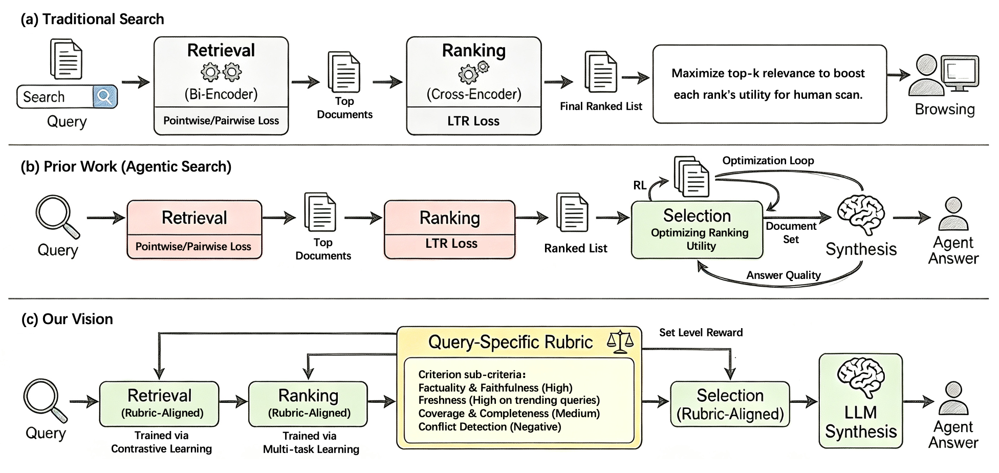
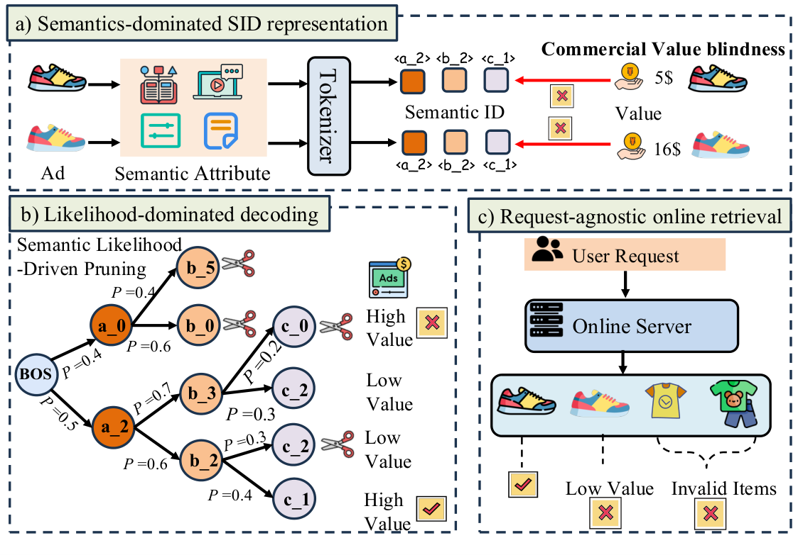
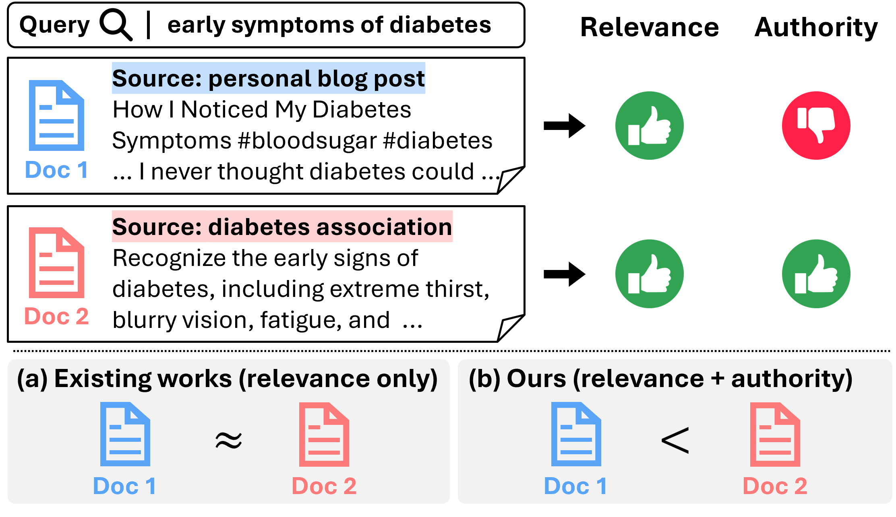

目录 · 5 节
1列表排序对准的，不一定是答案需要的那一组2一份查询量表，怎么同时管检索和排序3挑 3 到 8 篇时，集合分数怎样回传到策略4线上加在一起，为什么不等于分开加的总和5离线数字能核对到哪一步搜索结果是给大模型写答案用的，上游却还在按「一条一条对人好不好看」来训：腾讯元宝用评分量表对齐整条管道
传统搜索面向浏览列表的人，会综合相关性、权威性、新鲜度和多样性来排序。可在智能体搜索里，人不再一条条往下翻，而是由大模型根据一小撮文档写出一个答案。答案好不好，取决于它拿到的那一组文档是否够用、有没有漏掉关键条件、彼此会不会打架。
现有做法常常还是先按单篇相关性做检索和排序，只在最后用强化学习挑一个子集。上游并没有对着「这组文档对写答案有没有用」来训练，后面的选择器再强，也只能在已经偏了的候选里挑。
腾讯元宝搜索（Yuanbao Search）与武汉大学的研究者把整条管道放到同一套查询级评分量表下训练。这份量表写出加权的正向标准，以及必须避开的负向标准，再派生出两种监督：一种变成每篇文档的效用标签，用来训检索和排序；一种直接给整个子集打分，用来训选择器。论文署名为 Yu Lu、Lixin Zou、Yangqi Chen、Hui Xu、Qiaolin Xia、Hao Wang、Qianwen Ma、Reed Li、Shuang Zeng、Haijin Liang、Haibo Shi。Lixin Zou 的单位是武汉大学网安学院；多数作者使用腾讯邮箱。官方 HTML 没有把每位作者的单位都抽完整，这里不补写。
列表排序对准的，不一定是答案需要的那一组
传统搜索的目标，是让人顺着列表往下看时，每一名都尽量有用。智能体搜索改了消费方式：大模型只看到一个有界的文档集合，并据此写一份综述或回答需要多篇证据拼起来的问题。集合若缺了一面、或混进了互相冲突的材料，后面的生成再强也补不回来。
已有工作往往沿着两条线分别推进：把单个阶段做得更好，或在已经按相关性训好的上游之上，再用强化学习挑子集。作者认为，这样会把整条栈留在「对写答案是否有用」之外。

他们的做法是给每条查询做一份评分量表，也就是把信息需求拆成一组可核对的标准，用来定义怎样的证据集合才靠得住。正向标准要被满足，负向标准要被避开，并且带有权重。这份量表既给整组文档打分，也往下摊成单篇标签，让检索和排序提前朝同一方向学。
一份查询量表，怎么同时管检索和排序
线下会先为查询自动生成从粗到细的量表。有了量表之后，还需要能在海量查询-文档对上打出单篇标签，因为检索和排序仍然要给每一篇打分，才能建索引、取回前一千篇左右的候选。
标注器把查询、文档和这份量表映成 0 到 3 的效用等级，用来近似一篇文档对整份量表的满足程度。3 表示高权重正向标准都覆盖到了，并且没有触发负向标准；2 表示主要标准基本覆盖、次要标准有缺。1 只覆盖了低权重标准；0 是触发了负向标准，或什么正向标准都没覆盖到，所以 3 是更完整的证据，0 是无用或有害的材料。
论文给的例子是查询「2026 iPad Pro 的性能和价格」：一篇同时写了 M5 基准、续航和官方售价的文档标成 3，一篇只提到芯片名称的文档标成 1。
直接让大模型给语料里每一对都打标，规模上做不到。作者用强模型当线下教师，只标注一小部分，再把判断蒸馏到一个轻量学生标注器上。学生先用教师标注做监督微调，再用强化学习直接优化和量表的对齐。骨干是 Qwen3-4B。正负对排序比（PNR）统计的是：在标签更高的文档对里，模型分数顺序正确的对数，除以顺序错误的对数；论文写明大于 1 表示成对顺序总体是对的，越高越好。在内部基准上，监督微调的 PNR 是 4.50，加上困难样本和思维链后的数据优化升到 4.67，再加强化学习到 4.82；最后这个检查点被用作生产标注器，为检索和排序提供监督。
检索用的是 6 亿参数的 Qwen3-Embedding 双编码器。它先在 6.1 亿条域内查询-文档对上做对比预训练，再用标注器核实过的、等级至少为 2 的正例替换原来的日志共现正例，做效用对齐的微调。排序则用 40 亿参数的 Qwen3 模型，四个打分头分别对应效用、权威、新鲜度和质量，并共享同一个编码器。效用头由标注器的量表标签监督，另外三个头用已有的生产信号；推理时只用效用头打出一个分数。辅助头的损失会乘上 0.5，另外三项只做适度的多任务约束。
挑 3 到 8 篇时，集合分数怎样回传到策略
排序后大约留下 20 篇，选择器再从中挑出 3 到 8 篇，作为给大模型写答案的最终子集。和前面两段不同，这里优化的是整个子集能不能覆盖量表。策略模型是 70 亿参数的 Qwen3-Instruct。文中把一条轨迹记成一个 3 到 8 篇的文档子集；训练时策略的每一步以查询、排序后的候选和已经写出的前缀为条件。原文没有说明输出 token 如何编码并转换为文档子集，也没有说明多样性约束具体在哪一步、以何种方式实施。线上推理时，策略并不再把量表当作输入。量表是训练阶段给奖励用的：奖励来自逐点集成评判器（PE Judge），由 DeepSeek-V4-Flash 按量表给整个子集打分，把加权的正向标准满足程度加总，再减去被触发的负向标准扣分。
难点在于，这个奖励是整个子集的一个标量，没有逐步的对错信号。作者用双分支训练来分摊功劳：对每条查询采样 8 条轨迹，用评判器打分后做组内标准化。高于组平均的轨迹进入 GRPO 分支，在词的粒度上强化这些模式；低于或等于组平均的轨迹不使用负优势更新，而是把组内最好的一条当作教师，做最优轨迹蒸馏（文中简称 OPD），按奖励差距加权，让策略去靠近这条轨迹。 Hoot 说

分数高于组平均
- 这条轨迹
- 进入 GRPO 分支
- 更新什么
- 在词的粒度上强化这条选法
- 信号
- 组内相对优势，仍是整个子集的一个分
不是把 3 到 8 篇文档逐篇判对错。
分数低于或等于组平均
- 这条轨迹
- 不使用负优势更新
- 改学谁
- 组内分数最高的那条轨迹
- 学的力度
- 按与最高分的差距加权
论文写明，若直接用负优势，会不分青红皂白压低所有词。
对照的是同一查询、同一组 8 条轨迹里的两种更新，不是两条互不相干的流水线。图 2 只画到双分支，没有把分流标准并排写出。
出处
论文 §2.5：每条查询采样 G=8 条轨迹，奖励为整个子集的一个标量；r>μ 进 GRPO，r≤μ 不使用负优势，改为蒸馏组内最高分轨迹，权重为奖励差距。
线上加在一起，为什么不等于分开加的总和
线上对照在元宝搜索 5% 的生产流量上跑了 14 天，大约覆盖 280 万条查询。再从这 14 天的流量里抽 1,000 条查询，做盲测的并排人工评答案：标注员比较实验组和对照组的回答，并不知道哪边是哪套系统。指标是好坏对比（GSB）：更好减更差，再除以更好、持平和更差的总数。
下表把三个组件分别加到生产基线上的增益，和三条一起上线的净增益放在一起。数字来自论文表 2。
| 配置 | 答案质量 GSB 增益（%） |
|---|---|
| 生产基线 | — |
| 只加量表对齐的检索 | +0.40 |
| 只加量表对齐的排序 | +3.94 |
| 只加量表对齐的选择 | +4.82 |
| 三项分装增益之和 | +9.16 |
| 三条一起上线 | +8.52 |
（数字来自论文表 2）
三项分别加在生产基线上都有增益，选择最大（+4.82%），排序 +3.94%，检索 +0.40%；论文用相对生产基线的配对 t 检验，把这三项都标为 p 小于 0.05。
分装之和 9.16% 比一起上线的净增益 8.52% 高出 0.64 个百分点，所以不能把三条增益直接相加；一起上线的答案质量 GSB 净增益是 8.52%。 作者把这一差解释为三项朝同一量表目标训练，收益有重叠。检索的增益最小，文中写它推理成本很低，而且会把更高质量的候选传给后面所有阶段。
离线数字能核对到哪一步
量表本身也做了对人判断的核对。在 2,000 对已人工标注的集合排序样本上，奖励模型带着完整量表与人的两两一致率是 79.3%，直接打效用、不用量表则是 68.7%。拿掉负向标准、细分子标准、多模型生成或标准权重，一致率都会下降，其中负向标准下降最多。剩下的 21% 里，作者将其归为 7% 真正判错、4% 意图不清、10% 只部分满足，所以 79.3% 并不是上界已经封顶的意思，而是还把判错和说不清的情况留在账上。
检索在四个内部基准的 Recall@1K 上，域内预训练相对开源零样本检查点提升 5.1 到 8.6 个百分点，效用对齐微调再加 5.6 到 6.1 个百分点，合在一起是 11.2 到 14.2 个百分点。实体和长尾上的合计提升最大，分别是 14.2 和 12.8 个百分点，各步相对上一步的配对检验均显著。INT4 量化最多让召回下降 0.87 个百分点，且不显著。排序在 40 万条人工标注基准上的 PNR，基线是 3.807，单独多任务是 3.893，单独焦点损失是 3.939，两者一起是 3.959。作者因答案级评估成本高，在线下只报 PNR，并说明它不能换算成线上的 GSB 增益；二者在经验上方向一致，所以把它当作线上指标的离线参照，而不是同一数字的两种写法。
选择器的对照里，生产基线的效用分是 9.45，监督微调到 9.70，只做 GRPO 是 9.68，低于监督微调；GRPO 加上最优轨迹蒸馏才到 9.73，相对基线提升 3.0%。权威、新鲜度和质量几乎没有跟着变。作者认为，这是因为基线按单篇相关和权威打分，再用子模多样性重排，目标里并没有奖励覆盖这条查询的量表；而教师标签、微调目标和集合奖励都定义在量表上。提升幅度不大，但是方向稳定。
这些线上和离线结果都站在同一套生产系统里：流量来自元宝搜索，盲测只覆盖抽到的 1,000 条查询，离线检索和排序基准也是内部集合。量表与人的一致率不到八成，标注器是蒸馏加强化学习的产物，不是全量人工金标准。把同一套数字搬到别的产品或别的评测协议上，不能默认会保持不变。
读完这篇，你觉得
夜读鸮记下了，谢谢你的反馈。
点一下即可，无需登录；再点一次撤回。只统计匿名次数，不记录你是谁。
相关论文RELATED
 Retrieval · 2026-11-13Beyond Query-Item Matching: Personalized Behavioral Relevance Modeling for E-commerce Search via Rubric-Guided Reinforcement Learning电商搜索通常先由相关性模型按 query 和商品的文字匹配把候选分成几档，再交给 CTR 模型排序，于是用户明明偏爱的商品，可能因为被分到低档而很少露出。阿里 1688 的这篇工作把一部分个性化挪到相关性这一步：让大模型读用户当天、近期和长期的搜索与购买记录，判断这件商品有没有行为证据支持，有就在相关性分档里提一级。训练时除了奖励判断对错，还按每条样本单独生成的评分细则，检查推理有没有真的用上这些行为证据。在 5% 的主搜流量上做了三天 A/B，有交易的用户天数提升 0.67%。个性化不一定只能放在排序层，改相关性分档也能起作用。线上只读离线算好的缓存结果，几乎不增加延迟。
Retrieval · 2026-11-13Beyond Query-Item Matching: Personalized Behavioral Relevance Modeling for E-commerce Search via Rubric-Guided Reinforcement Learning电商搜索通常先由相关性模型按 query 和商品的文字匹配把候选分成几档，再交给 CTR 模型排序，于是用户明明偏爱的商品，可能因为被分到低档而很少露出。阿里 1688 的这篇工作把一部分个性化挪到相关性这一步：让大模型读用户当天、近期和长期的搜索与购买记录，判断这件商品有没有行为证据支持，有就在相关性分档里提一级。训练时除了奖励判断对错，还按每条样本单独生成的评分细则，检查推理有没有真的用上这些行为证据。在 5% 的主搜流量上做了三天 A/B，有交易的用户天数提升 0.67%。个性化不一定只能放在排序层，改相关性分档也能起作用。线上只读离线算好的缓存结果，几乎不增加延迟。 Retrieval · 2026-11-11Yuanbao-Reranker: Document-Grounded Synthesis and Preference Distillation for Text Reranking用相关和不相关两个标签做 pointwise 微调的 reranker 有个缺口：同一个 query 的负例全都标成不相关，模型学不出哪个负例更接近正例。腾讯元宝搜索给每个正例配三个难度不同的负例，再加一项蒸馏损失：老师模型给出的两篇文档分差被当作下限，学生拉开到这个距离就不再受罚。在没参与训练的分组上，三档负例完全排对的比例从 36.4% 涨到 69.7%，而正负例的区分本来就接近满分。把下限换成平方误差去贴分差，平均分比不加这一项还低，因为已经拉开的分差会被往回压。负例内部的先后才是二分类标签漏掉的信息，最终 4B 学生的五项平均分超过了当老师的 8B 模型，训练 reranker 时值得先看负例的分数是不是都挤在一起。
Retrieval · 2026-11-11Yuanbao-Reranker: Document-Grounded Synthesis and Preference Distillation for Text Reranking用相关和不相关两个标签做 pointwise 微调的 reranker 有个缺口：同一个 query 的负例全都标成不相关，模型学不出哪个负例更接近正例。腾讯元宝搜索给每个正例配三个难度不同的负例，再加一项蒸馏损失：老师模型给出的两篇文档分差被当作下限，学生拉开到这个距离就不再受罚。在没参与训练的分组上，三档负例完全排对的比例从 36.4% 涨到 69.7%，而正负例的区分本来就接近满分。把下限换成平方误差去贴分差，平均分比不加这一项还低，因为已经拉开的分差会被往回压。负例内部的先后才是二分类标签漏掉的信息，最终 4B 学生的五项平均分超过了当老师的 8B 模型，训练 reranker 时值得先看负例的分数是不是都挤在一起。
Generative · 2026-05-11UniVA: Unified Value Alignment for Generative Recommendation in Online Advertising at Tencent生成式广告推荐里，生成概率最高的广告不一定最赚钱。这篇论文找出价值流失的三处：编号只按内容分、解码只看概率、搜索浪费在投不了的广告上。编号最后一位改按商业条件和出价档位来分，解码时再加一个学出来的价值分，并且只在当前请求能投的广告里搜。在微信视频号 20% 流量上跑了 5 天，GMV 提升 1.50%。 Retrieval · 2026-10-25Rubric-Calibrated Preferences: Cross-Query Calibration of LLM Judgments via Item Response Theory在作者评测的重排器上，NanoBEIR 有 45.6% 的查询，nDCG 分不出高下。根源在人工相关性标注稀疏、有噪声，只有几个离散等级。RCP 先让 LLM 每次读 10 篇文档打分，同一篇会进多个批次，批内一篇比另一篇高得越多，它越可能更相关，Bradley-Terry 模型据此合成每篇的总分。再让 LLM 对每篇回答五个由易到难的是或否问题，从是否切题一直问到是否深入回答了查询。再借助项目反应理论把总分平移、缩放成能力值，能力值比题目难度高得越多，预测通过率越高；题目难度各查询共用，只有平移和缩放按查询拟合到贴近实际回答，不同查询的分数就落到同一把尺子上。以外部标注员的盲评为准，RCP 把有用文档排在无用文档前面的概率做到 0.910，原来的人工标注只有 0.651。
Retrieval · 2026-10-25Rubric-Calibrated Preferences: Cross-Query Calibration of LLM Judgments via Item Response Theory在作者评测的重排器上，NanoBEIR 有 45.6% 的查询，nDCG 分不出高下。根源在人工相关性标注稀疏、有噪声，只有几个离散等级。RCP 先让 LLM 每次读 10 篇文档打分，同一篇会进多个批次，批内一篇比另一篇高得越多，它越可能更相关，Bradley-Terry 模型据此合成每篇的总分。再让 LLM 对每篇回答五个由易到难的是或否问题，从是否切题一直问到是否深入回答了查询。再借助项目反应理论把总分平移、缩放成能力值，能力值比题目难度高得越多，预测通过率越高；题目难度各查询共用，只有平移和缩放按查询拟合到贴近实际回答，不同查询的分数就落到同一把尺子上。以外部标注员的盲评为准，RCP 把有用文档排在无用文档前面的概率做到 0.910，原来的人工标注只有 0.651。
Retrieval · 2026-04-17From Relevance to Authority: Authority-aware Generative Retrieval in Web Search EnginesNAVER 想让生成式检索在相关度差不多时偏向可信来源。做法是让视觉语言模型看网站截图和文字打 0 到 100 的权威分，再把这个分数当 GRPO 的奖励，训练一个直接生成网站域名的 3B 模型；上线时不替换原排序，只给生成的网站加分。离线 P@3 从 0.3555 提到 0.3856，和 14B 模型打平，R@5 还略低。奖励里只有权威分，相关性全靠 SFT 和 KL 约束兜住。线上 A/B 的对照组本身也有涨幅，口径不清，需要打折看。 Retrieval · 2026-10-25Learning Marginal Viewpoint Utility for Budgeted Evidence Selection in RAG问一个关于选举参与的问题，完整的回答应该同时讲到投了票、没投票、没有投票资格三种人；如果上下文里全是投票者的回答，哪怕每条都准确、相关，也只代表了一种观点。LMVU 是一个只有 18 个系数的线性排序器，每一步用候选和已选证据之间的相似度算出新颖度等特征，估计它能给当前上下文补上多少还没覆盖的观点，系数在带观点标注的开发集上学出来。作者用上下文覆盖了标注观点中的几成来评价。在四个带观点标注的基准上，LMVU 的平均覆盖率是 0.9588，超过全部 16 个对比方法，其中包括两个训练成本高出几个数量级的神经重排器。
Retrieval · 2026-10-25Learning Marginal Viewpoint Utility for Budgeted Evidence Selection in RAG问一个关于选举参与的问题，完整的回答应该同时讲到投了票、没投票、没有投票资格三种人；如果上下文里全是投票者的回答，哪怕每条都准确、相关，也只代表了一种观点。LMVU 是一个只有 18 个系数的线性排序器，每一步用候选和已选证据之间的相似度算出新颖度等特征，估计它能给当前上下文补上多少还没覆盖的观点，系数在带观点标注的开发集上学出来。作者用上下文覆盖了标注观点中的几成来评价。在四个带观点标注的基准上，LMVU 的平均覆盖率是 0.9588，超过全部 16 个对比方法，其中包括两个训练成本高出几个数量级的神经重排器。 Retrieval · 2026-11-04WeSearch: A Unified Model-Centric Retrieval Framework for WeChat Search微信搜索的 WeSearch 用一个模型替掉了原来并行的多路召回：先按 query 找出相关的文档簇，再在这些簇里逐篇给文档打相关分，把粗筛和精细判断分开。它不像生成式检索那样给每篇文档一个固定的层级 Semantic ID，那种做法默认一篇文档只走一条语义路径，可一篇文章常常同时讲好几件事。索引可以增量更新，模型从原来的每月更新变成每周、必要时每天刷新。它已作为微信搜索的主召回上线，一个月全量 A/B 里 CTR 提升 0.68%，检索资源成本降了 41%。多取一些簇来保召回，谁更相关交给逐篇打分。
Retrieval · 2026-11-04WeSearch: A Unified Model-Centric Retrieval Framework for WeChat Search微信搜索的 WeSearch 用一个模型替掉了原来并行的多路召回：先按 query 找出相关的文档簇，再在这些簇里逐篇给文档打相关分，把粗筛和精细判断分开。它不像生成式检索那样给每篇文档一个固定的层级 Semantic ID，那种做法默认一篇文档只走一条语义路径，可一篇文章常常同时讲好几件事。索引可以增量更新，模型从原来的每月更新变成每周、必要时每天刷新。它已作为微信搜索的主召回上线，一个月全量 A/B 里 CTR 提升 0.68%，检索资源成本降了 41%。多取一些簇来保召回，谁更相关交给逐篇打分。
讨论
欢迎补充实验细节、复现经验或不同看法。需 GitHub 登录。
正在加载讨论…